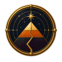

Header
Bee sigil, Scene Type, Scene Name, and Realm Name. One send-to-Ki control.
This page specifies the persistent Chrome, the controls contained in each area, and the panels those controls open. Task overlays are included for review.
The Scene Identifier, contextual task dock, and communications panel are visible when the Scene opens. Select any control to inspect its panel. Select a bee to open its Task overlay.
Kiduna Dev

ProjectThis component identifies the current Scene and opens navigation and inspection controls for that Scene and its containing Realm.
The compact identifier is replaced by the panel while it is open. The panel does not repeat the Realm Name outside the identifier header.
Bee sigil, Scene Type, Scene Name, and Realm Name. One send-to-Ki control.
Home: Under the Bridge. Back: Firefly Meadow. History disclosure shows earlier locations.
Realm Type and Purpose remain visible as separate sections.
The Park → Kinship Systems → Apiary. Each parent is navigable.
Creation, Catalyst, Authority, governance, and treasury remain collapsed until requested.
Every information section can send its exact context into the locked communications panel.
The dock is organized around Tasks. The contents of each panel are filters, navigation, or Task creation—not general Scene editing tools.
The panel stays open on the right. It combines Ki, Allies, and Task Actors in one communication surface and provides meeting setup.
The panel stays on the right across Scenes. It does not become a floating response window.
Allies are people or intelligences. Actors are Task-scoped intelligences. They are labeled separately.
Send-to-Ki controls add structured context to the thread without performing an Action.
The meeting control selects participants and Task or Scene context before review.
Opening a Task Actor conversation can reopen and highlight the related bee.
Messages can prepare Actions. Consequential changes remain subject to explicit confirmation.